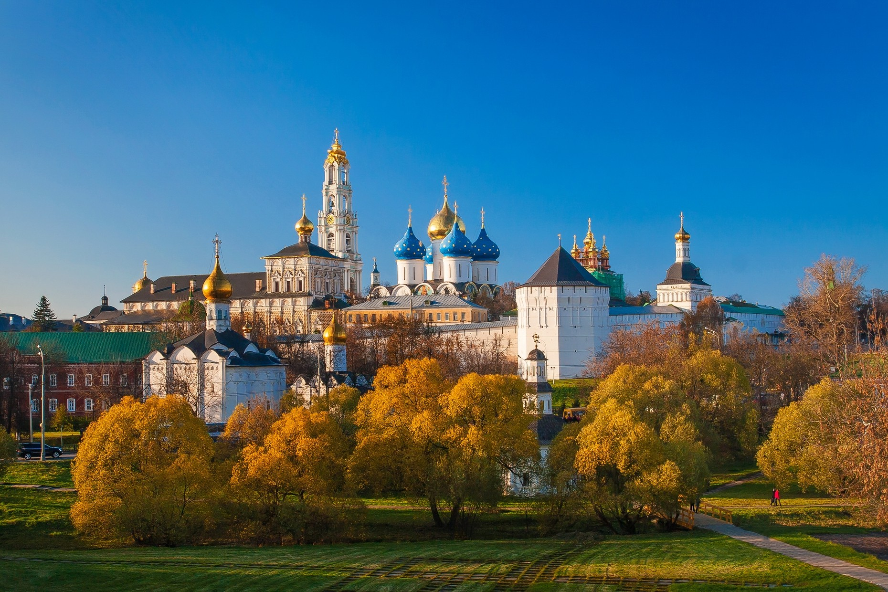
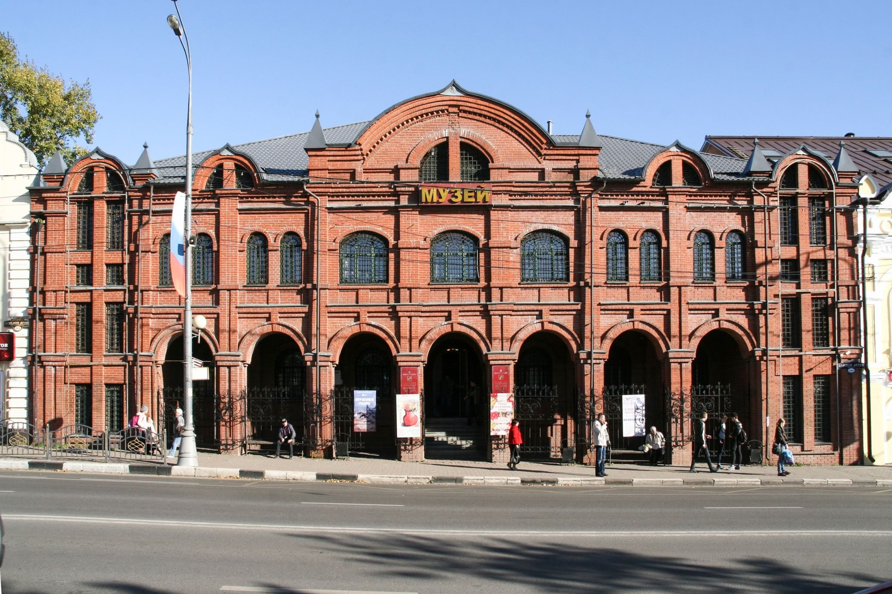
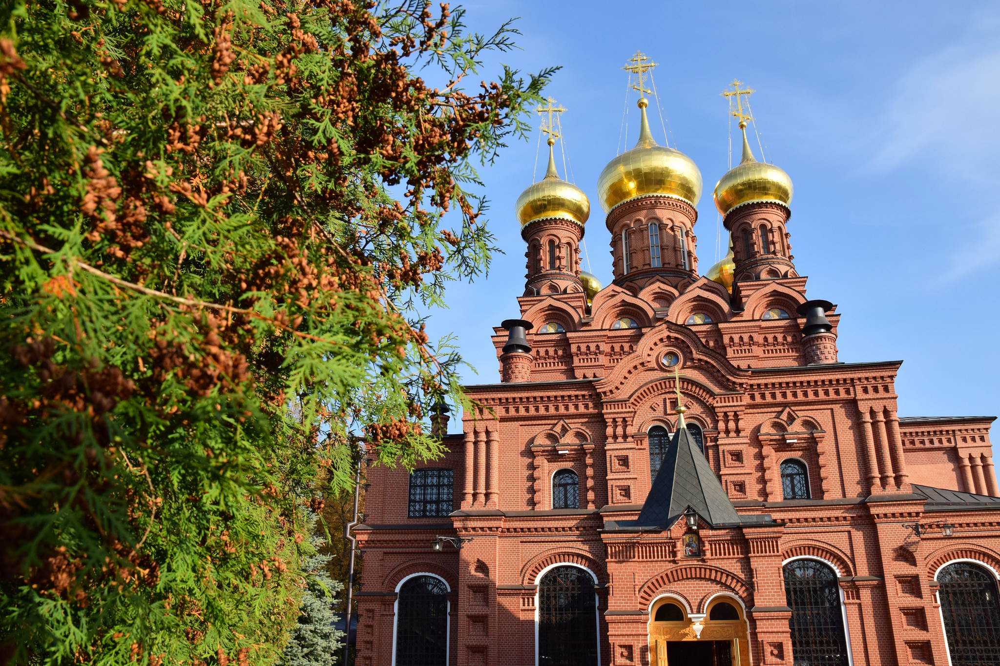

Сергиев Посад
Город был назван в честь особо почитаемого в России святого – Сергия Радонежского, который и основал известную на весь мир лавру. Сегодня Сергиев Посад является одним из наиболее значимых культурных центров Подмосковья, «жемчужиной» Золотого кольца. Благодаря удачному расположению на пересечении различных транспортных артерий город активно развивается. Помимо Троице-Сергиевой лавры, в городе располагается свыше 250 памятников истории и культуры.

Свято-Троицкий монастырь основал под Москвой преподобный Сергий Радонежский в 1337 году. Обитель Живоначальной Троицы не раз подвергалась нападениям — в XIII веке ее разграбил золотоордынский хан Едигей, в XV веке монастырь выдержал осаду 30-тысячного войска польских интервентов. В 1744 году Троицкий монастырь был удостоен титула лавры. На протяжении нескольких столетий паломники со всего мира посещают это место как одну из самых почитаемых православных святынь.

Сергиево-Посадский музей-заповедник — один из крупнейших музеев Московской области, здесь хранится древнее собрание изобразительного и прикладного искусства Троице-Сергиевой лавры. В центре экспозиции —работы мастеров московской художественной школы XIV–XVII веков. В музее собрана одна из крупнейших в России коллекций русского народного искусства — роспись и резьба по дереву, обработка металла, набойка, крестьянский костюм.

В 40-е годы XIX века в трех километрах от Троице-Сергиевой лавры преподобный Антоний основал Гефсиманский Черниговский скит — отдельный монастырь для монахов-отшельников. Уединенное живописное место стало пристанищем для более чем 400 монахов. Антоний заповедовал содержать скит в простоте и строгости — даже церковная утварь была деревянная. Святитель Филарет Московский писал: «Простота… есть надежда скита. Да сохранит сие Господь». После революции скит закрыли, монашеская жизнь здесь возобновилась только к 90-м годам XX века.
